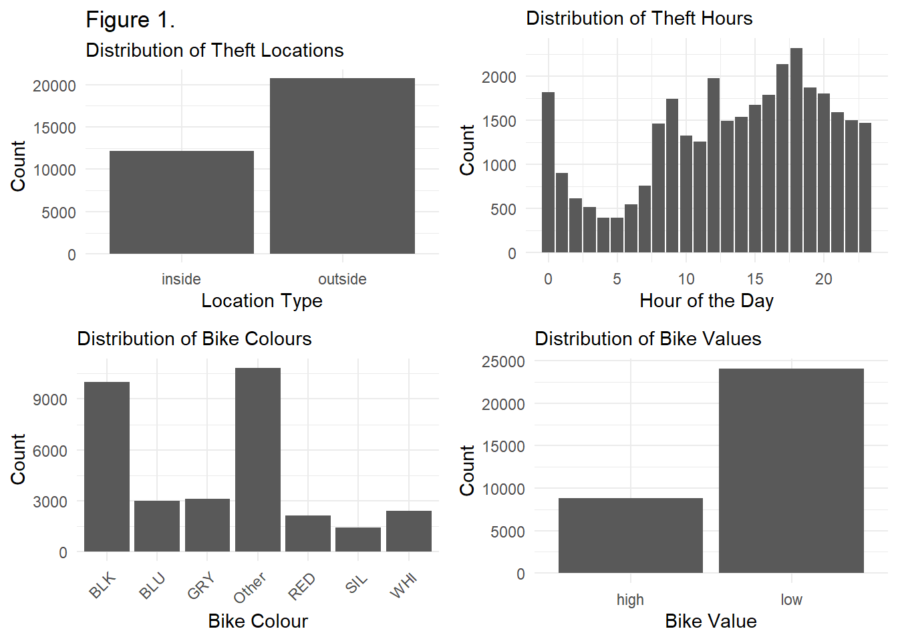
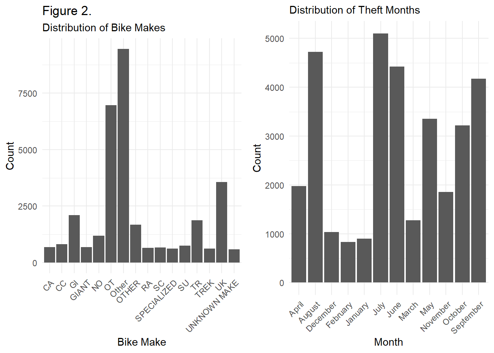
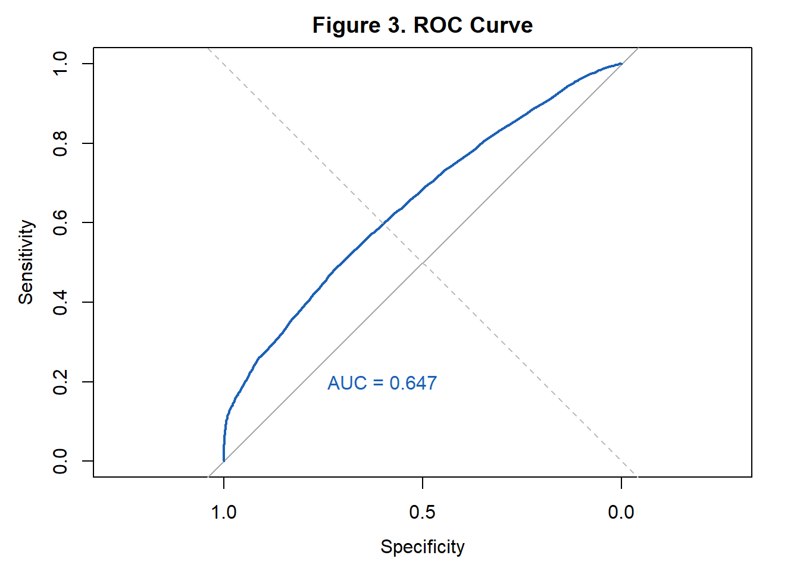

Analyzing the Impact of Location and Time on High-Value Bicycle Thefts in Toronto.
Revealing Seasonal Trends, Hotspots, and Predictive Factors.
Abstract
Bicycle theft poses a significant challenge in urban environments, impacting both individuals and communities. Understanding the complex dynamics of bicycle theft patterns and risk factors is crucial for developing effective prevention strategies. In this project, we analyze bicycle theft data from the Toronto Police Service, focusing on temporal trends, spatial patterns, and socio-economic factors influencing theft occurrences. Utilizing statistical techniques such as logistic regression and machine learning algorithms, we identify key predictors of theft likelihood, including theft location, bike characteristics, and temporal factors. Our findings reveal distinct seasonal variations and hourly patterns in theft occurrences, highlighting the importance of tailored prevention measures. Additionally, we investigate the socio-economic and environmental factors contributing to thefts, providing insights for holistic prevention strategies. By combining quantitative analysis with qualitative insights, this project aims to inform evidence-based policies and interventions to reduce bicycle theft and enhance urban security.
1 Introduction
In advancing our understanding of urban bicycle theft, this study endeavors to meticulously examine how the theft location—public versus private spaces—affects the likelihood of high-value bicycles being targeted. This effort is differentiated from existing research by its comprehensive consideration of various factors such as the time of day, the brand and color of the bike, and seasonal variations. This approach is not only driven by a commitment to community safety and the promotion of cycling but also by the need to uncover specific patterns and contexts of bicycle theft that remain underexplored in the literature (Mburu and Helbich 2016).
Central to this study is the hypothesis that the interplay between the location of theft and these nuanced variables significantly influences theft outcomes. Unlike previous studies, which may have focused broadly on theft incidents or on singular aspects such as the effectiveness of prevention strategies or the impact of environmental factors, this research delves into the granular details of how and why certain bicycles are more likely to be stolen in specific settings (Levy, Irvin-Erickson, and La Vigne 2018). By integrating a mixed-method analysis that combines quantitative theft data with qualitative insights from cyclists and law enforcement, this study aims to provide a multidimensional view of bicycle theft dynamics.
The selected variables—ranging from temporal factors like time and season to the intrinsic features of the bicycles such as brand popularity and color—were inspired by a gap identified in the literature (Salvanelli 2019). These choices are aimed at enhancing the dataset to focus specifically on urban theft incidents, thus offering a richer, more detailed exploration than previously available. The outcomes of this research seek not only to add to the academic discourse by identifying new patterns and preventive measures but also to offer practical recommendations for urban planning and community efforts aimed at minimizing theft-related losses.
By filling this critical research void, the findings of this study are anticipated to inform targeted interventions, enriching the strategies employed by urban planners and cycling advocates to safeguard bicycles. In doing so, this research stands as a pioneering effort to explore the multifaceted nature of urban bicycle theft, providing a solid foundation for future studies while contributing actionable insights toward the creation of safer, more bike-friendly urban environments.
The structure of this paper is organized as follows: Section 2 introduces the data used for analysis, including visualizations of the variables of interest; Section 3 presents the logistic regression model combined with lasso used to explore the relationships between bicycle theft variables; Section 5 displays the interpretations of the model alongside other findings; and Section 6 provides a discussion on the implications of the findings, the limitations of this study, and its next steps for further research on this topic.
Programming scripts and data are available at: https://github.com/liuziy23/torontobiketheftanalysis.
2 Data
2.1 Data Source
The data utilized in this study focuses on urban bicycle thefts, accessible through the open database provided by the Toronto Police Service, available at: Toronto Police Service - Bicycle Thefts (“Toronto Police Service Bicycle Thefts Data,” n.d.). The database contains detailed records of reported bicycle thefts in Toronto, covering various aspects including the time, location, type of premises, bike make, and color, among other factors. The open-source nature of this dataset allows for free public access, supporting research and community awareness efforts regarding bicycle theft.
The primary entities of this dataset include the theft incident, which is characterized by specific details such as the type of bicycle, the circumstances of the theft, and the outcome if known. Additional elements captured in the dataset include the make and color of the bicycle, the location of the theft, and the date and time it occurred, along with identifiers for each unique incident.
The data collection process involves reports typically filed by the victims of theft, complemented by police reports and possibly eyewitness accounts. The primary method of data accumulation is incident reporting, which, unlike convenience sampling, may not uniformly cover all demographic or geographic areas but provides real, specific case studies of theft. This method has the advantage of detailing actual events and conditions under which bicycle thefts occur, offering practical insights into patterns and preventive measures.
Data from these reports is instrumental in understanding the dynamics of urban bicycle theft, particularly the effectiveness of various security measures and the impact of environmental factors on the likelihood of theft. These reports are crucial in providing comprehensive assessments of theft incidents during all times of the year, reflecting the ongoing challenge of securing bicycles in a major urban area. The dataset is enriched with details on the location and timing of thefts, which are critical for analyzing trends and developing strategies to mitigate these incidents in the community.
The analysis presented in this paper utilizes the R programming language (R Core Team 2020) for performing statistical computations and data visualization. Essential packages from the tidyverse (Wickham et al. 2019) are employed, including dplyr (Wickham et al. 2023) for data manipulation and cleaning, readr (Wickham, Hester, and Bryan 2023) for data importation, here (Müller 2020) for specifying file paths, ggplot2 (Wickham 2016) for generating data visualizations, gridExtra (Auguie 2017) for arranging visualizations, knitr (Xie 2014) for formatting output tables, and modelsummary (Arel-Bundock 2022) for producing summary tables. Additionally, the glmnet package (Tay, Narasimhan, and Hastie 2023) is used for regularization techniques and model fitting, the car package (Fox and Weisberg 2019) provides advanced data handling and statistical tests to including assessing multicollinearity, and the pROC package (Robin et al. 2011) provides tools for calculating measures from logistic regression models.
2.2 Variables of Interest
Our analysis specifically focuses on the incidence of bicycle thefts. In this paper, we utilize a dataset exclusively dedicated to bike thefts, which contains 32,874 observations, where each row corresponds to a reported theft incident and each column represents a distinct variable, such as demographic details or the circumstances surrounding the theft (“Toronto Police Service Bicycle Thefts Data,” n.d.). This dataset enables us to explore a variety of factors including the type of location where the theft occurred, the brand of the bicycle, the time and month of the theft, the color of the bicycle, and the value of the bicycle. It is noteworthy that the 32,874 records in our dataset cover a wide range of theft incidents, allowing for a comprehensive analysis of trends and patterns.
Variables included in the analysis are:
Location Type: Main exposure variable, distinguishes theft location as public or private; included as a predictor.
Bike Make: Brand of bicycle, used to explore brand’s impact on theft likelihood; included as a predictor.
Occurrence Hour: Time of theft, used to identify high-risk hours; included as a predictor.
Occurrence Month: Month of theft, used to analyze seasonal theft patterns; included as a predictor.
Bike Colour: Assesses if color influences theft risk; included as a predictor.
Bike Value: Binary response variable; categorized as high value (over $1000) or not.

In this paper, we present detailed visualizations of the distributions of the variables under study, specifically in Figure 1 and Figure 2. These figures are instrumental in highlighting the diverse structures and forms that characterize each variable’s distribution. Figure 1 focuses on the distribution of theft occurrences by time of day and month, revealing potential patterns that suggest higher theft risks during specific hours and seasonal peaks. For instance, the visualization may show increased thefts during late evening hours and in warmer months, indicating a need for heightened security measures during these times. Figure 2, on the other hand, examines the distributions of the bike’s make, color, and value. This figure provides insights into which bicycle brands are more frequently targeted by thieves, which colors are most susceptible to theft, and the prevalence of high-value bicycles in theft incidents. For example, a concentration of thefts involving high-value bikes in certain colors could suggest specific market preferences among thieves.
These visualizations not only aid in understanding the raw data but also serve as a foundation for the subsequent statistical modeling phase. The varied structures observed in the data distributions—ranging from skewed distributions for bike values to categorical distinctions in bike make and color—will be carefully accounted for in our modeling strategies. These efforts are aimed at developing a comprehensive understanding of the factors influencing bicycle theft, which in turn can inform targeted interventions to reduce such incidents. By meticulously analyzing the distribution and influence of each variable, we enhance the predictive power of our models, thereby contributing valuable insights into effective theft prevention strategies.
Understanding when bike thefts occur helps target prevention efforts. Seasonal and hourly trends indicate times of higher theft risk, guiding strategic security planning and resource allocation.
| OCC_MONTH | Frequency | Percentage |
|---|---|---|
| July | 5104 | 15.53 |
| August | 4727 | 14.38 |
| June | 4420 | 13.45 |
| September | 4176 | 12.70 |
| May | 3354 | 10.20 |
| October | 3219 | 9.79 |
| April | 1976 | 6.01 |
| November | 1855 | 5.64 |
| March | 1276 | 3.88 |
| December | 1038 | 3.16 |
| January | 898 | 2.73 |
| February | 831 | 2.53 |
The categorical summary of bike theft occurrences across various months, as presented in Table 1 The table captures 32,874 instances of reported bike thefts, with each month revealing a distinct pattern of frequency. Notably, July stands out as the month with the highest theft incidents, constituting approximately 15.52% of the total cases. This is closely followed by August and June, with 14.38% and 13.44% respectively, indicating a trend of increased thefts during the summer months. Conversely, the winter months—specifically February and January—show a marked decrease in theft frequency, accounting for only 2.53% and 2.73% of the incidents. Within the table, the ‘Frequency’ column enumerates the actual count of thefts per month, while the ‘Percentage’ column elucidates the proportion of total thefts that occurred in each month. This distribution highlights a clear seasonal pattern, with more than 40 percent of thefts taking place during the warmer months of July through September, and the fewest thefts occurring in the cold of December through February.
| OCC_HOUR | Frequency | Percentage |
|---|---|---|
| 18 | 2316 | 7.05 |
| 17 | 2132 | 6.49 |
| 12 | 1976 | 6.01 |
| 19 | 1867 | 5.68 |
| 0 | 1818 | 5.53 |
| 20 | 1800 | 5.48 |
| 16 | 1784 | 5.43 |
| 9 | 1744 | 5.31 |
| 15 | 1674 | 5.09 |
| 21 | 1592 | 4.84 |
| 14 | 1540 | 4.68 |
| 22 | 1500 | 4.56 |
| 13 | 1491 | 4.54 |
| 23 | 1469 | 4.47 |
| 8 | 1465 | 4.46 |
| 10 | 1325 | 4.03 |
| 11 | 1259 | 3.83 |
| 1 | 898 | 2.73 |
| 7 | 761 | 2.31 |
| 2 | 612 | 1.86 |
| 6 | 547 | 1.66 |
| 3 | 517 | 1.57 |
| 4 | 395 | 1.20 |
| 5 | 392 | 1.19 |
The comprehensive summary of bike theft occurrences delineated by hour, as depicted in Table 2, outlines the frequency and percentage of thefts at various times throughout a 24-hour period, based on 32,874 reported incidents. The hour with the highest frequency of thefts is 18:00 (or 6 PM), representing 7.05% of total incidents, suggesting an elevated risk of theft during early evening hours. This is followed by hours 17:00 (6.49%) and 12:00 (6.01%), indicative of heightened theft activity in late afternoon and midday, respectively. In stark contrast, the early hours of the morning—specifically 01:00 and 05:00—show significantly fewer occurrences, with the lowest being at 5 AM, constituting only 0.11% of thefts. The ‘Frequency’ column in the table provides the precise count of thefts at each hour, while the ‘Percentage’ column offers insight into the share of total thefts happening at each corresponding hour. The data elucidates a pronounced pattern of theft risk that peaks during evening hours and diminishes substantially in the early morning, demonstrating the temporal trends in bicycle theft incidents.
3 Model
3.1 Model Methods - Variable Selection
In our study to discern the determinants of high-value bicycle theft, we utilize a methodological framework that combines Lasso logistic regression with cross-validation. Logistic regression is particularly suited for our study as it excels in modeling binary outcomes—such as classifying bicycle theft incidents as high-value or not. Its ability to provide probabilities along with odds ratios for the occurrence of an event based on various predictors makes it a useful tool in understanding the likelihood of high-value thefts. This approach allows us to directly link the characteristics of bicycles and their environment to the risk of being targeted by thieves, offering insights that are both statistically significant and practically interpretable.
The inclusion of Lasso (Least Absolute Shrinkage and Selection Operator) in the logistic regression model addresses the critical need for variable selection in the presence of potentially numerous predictors. Urban crime data often come with the challenge of high dimensionality—many variables like time, location, bike brand, and seasonality could potentially influence theft risk. Lasso aids in simplifying this complexity by penalizing the less significant variables’ coefficients, effectively shrinking them to zero. This not only helps in identifying the most impactful predictors but also in mitigating the risk of overfitting, thereby enhancing the model’s predictive accuracy and interpretability.
Conclusions are derived from the logistic regression analysis post-Lasso variable selection, focusing on the retained variables and their odds ratios. These odds ratios quantify the strength and direction of the association between each predictor and the likelihood of a bicycle theft being high-value. The statistical significance of these associations, along with their practical implications, guides our understanding of high-value bicycle theft dynamics.
4 Model Methods - Model Diagnostics and Validation
Model diagnostics comprises assessing the Variance Inflation Factor (VIF) and the Receiver Operating Characteristic (ROC) curve with the Area Under the Curve (AUC) metric. Post-Lasso variable selection, VIF is used to detect multicollinearity among predictors. A VIF above 5 indicates problematic multicollinearity, potentially distorting the model’s coefficients. Addressing this might involve dropping correlated predictors to improve model stability and interpretability. The ROC curve, plotted by comparing true positive rates against false positive rates at various thresholds, alongside the AUC metric (area under the ROC curve), evaluates the model’s ability to distinguish between binary outcomes effectively. An AUC close to 1 signifies excellent model performance, while values near 0.5 suggest no predictive benefit over random chance. An AUC over 0.6 will be deemed as adequately well model performance. These diagnostics ensure our model’s robustness by mitigating multicollinearity and verifying its predictive accuracy.
Model validation is conducted via cross-validation. Cross-validation is integral to our methodology, serving the dual purpose of validation and optimization. By partitioning the data into numerous sets and iteratively using each set as a validation while training on the others, we ascertain the model’s performance across different subsets of data. This process is key to determining the optimal lambda \(\lambda\), the regularization parameter in Lasso that influences the degree of shrinkage applied to the coefficients. The optimal lambda is the one that minimizes the cross-validated error, striking a balance between the model’s complexity and its ability to generalize to new data.
5 Results
| (1) | |
|---|---|
| (Intercept) | 0.531 |
| (0.017) | |
| locationoutside | -0.062 |
| (0.005) | |
| BIKE_MAKECC | -0.448 |
| (0.022) | |
| BIKE_MAKEGI | -0.220 |
| (0.019) | |
| BIKE_MAKEGIANT | -0.140 |
| (0.023) | |
| BIKE_MAKENO | -0.304 |
| (0.021) | |
| BIKE_MAKEOT | -0.184 |
| (0.017) | |
| BIKE_MAKEOther | -0.150 |
| (0.017) | |
| BIKE_MAKEOTHER | -0.049 |
| (0.020) | |
| BIKE_MAKERA | -0.367 |
| (0.024) | |
| BIKE_MAKESC | -0.429 |
| (0.023) | |
| BIKE_MAKESPECIALIZED | 0.094 |
| (0.024) | |
| BIKE_MAKESU | -0.439 |
| (0.023) | |
| BIKE_MAKETR | -0.214 |
| (0.019) | |
| BIKE_MAKETREK | -0.067 |
| (0.024) | |
| BIKE_MAKEUK | -0.235 |
| (0.018) | |
| BIKE_MAKEUNKNOWN MAKE | -0.170 |
| (0.024) | |
| BIKE_COLOURBLU | -0.090 |
| (0.009) | |
| BIKE_COLOURGRY | -0.060 |
| (0.009) | |
| BIKE_COLOUROther | -0.050 |
| (0.006) | |
| BIKE_COLOURRED | -0.030 |
| (0.010) | |
| BIKE_COLOURSIL | -0.078 |
| (0.012) | |
| BIKE_COLOURWHI | 0.018 |
| (0.010) | |
| Num.Obs. | 32874 |
| R2 | -11.123 |
| AIC | 37782.7 |
| BIC | 37984.3 |
| Log.Lik. | -18867.328 |
| RMSE | 0.43 |
The final model, referred as Model 1, is then a logistic regression model with bike theft being high value or not as the response variable and predictors being bike make, bike color, and location of theft. Table 3 showcases the coefficients of the predictor variables of Model 1. We focus on the upper section of this table, which includes the intercept coefficient and the coefficient representing the log odds of a stolen bike being of high value, and examines how they vary with different predictors. The standard errors of the estimated regression coefficients are displayed in brackets for reference.
We see location of theft, make of bike and colour of bike are statistically significant at 5%. Significant coefficients greater than 0 indicates being associated with more likely to be stolen while less than 0 is associated with less likely to be stolen. Bikes parked outside are less likely to be stolen. All bike makes are less likely to be stolen than bike make of “CA”, except for “specialized” makes which are more likely to be stolen than “CA” bikes. All bike colours are less likely to be stolen than black bikes, except for white bikes which are equally likely to be stolen than black bikes.

Figure 3 shows the ROC curve and the AUC. The AUC is 0.647, which means the model has adequate prediction accuracy.
| Predictor | VIF |
|---|---|
| location | 1.02 |
| BIKE_MAKE | 1.08 |
| BIKE_COLOUR | 1.06 |
The predictors in the model all have a VIF less than 2 and being very close to 1, as shown in Table 4, indicating lack of multicollinearity in the model.
6 Discussion
6.1 Understanding the complexities of bicycle theft reveals insights into theft patterns and risk factors
The final logistic regression model delves into the intricacies of factors influencing bicycle theft likelihood, particularly focusing on the value aspect—whether a bike is classified as high-value or not. Notably, the model highlights the significance of the theft location, with bikes parked outside showing a coefficient less than 0. This suggests that bicycles parked outside are less likely to be categorized as high-value thefts compared to those parked in unspecified default locations, potentially indicating more secure or private areas. Moreover, the analysis uncovers an intriguing insight regarding bike make, where all makes are generally less likely to be stolen than “CA” bikes, except for the “Specialized” brand, which stands out with a positive coefficient. This implies that “Specialized” bikes, renowned for their quality and potentially higher resale value, are more appealing to thieves, underscoring the impact of brand perception on theft risk. Similarly, the examination of bike color reveals that all colors, except white, are less likely to be associated with high-value thefts compared to black bikes. The equal likelihood of white bikes being stolen as black bikes may reflect a specific preference or market demand among thieves for these colors, possibly due to their visibility or resale value. Overall, the model unravels the intricate interplay between theft location, bike make, and bike color in determining the likelihood of a bicycle being a high-value theft target, emphasizing the crucial role of external factors in theft likelihood. This analysis directly addresses our research question by identifying specific characteristics that render a bicycle more susceptible to theft, advocating for tailored theft prevention strategies to mitigate high-value bicycle thefts.
6.2 Investigating the temporal trends of bicycle thefts provides actionable insights for theft prevention efforts
Analyzing the occurrence month and hour of bicycle thefts uncovers significant temporal patterns that inform strategic theft prevention measures. The analysis reveals distinct seasonal trends, with thefts peaking during summer months and diminishing during winter months. This seasonal variation highlights the importance of adapting theft prevention strategies to coincide with periods of heightened theft activity, such as increasing patrols and security measures during peak theft seasons. Additionally, examining theft occurrences by hour exposes specific times of day when thefts are most prevalent, guiding the allocation of resources for targeted surveillance and intervention. By understanding these temporal patterns, stakeholders can implement proactive measures to deter thefts effectively and enhance the security of bike owners and urban areas.
6.3 Understanding the socio-economic and environmental factors contributing to bicycle thefts informs holistic prevention strategies
Bicycle theft is influenced by a multitude of socio-economic and environmental factors, necessitating a comprehensive approach to theft prevention. Factors such as income inequality, access to secure parking facilities, and urban infrastructure play pivotal roles in theft occurrence. Targeted interventions addressing these underlying factors, such as improving bike parking infrastructure and implementing community policing initiatives in high-theft areas, can mitigate theft risk and enhance overall urban security. Moreover, public awareness campaigns and community engagement initiatives can foster a culture of collective responsibility and vigilance, encouraging active participation in theft prevention efforts. By addressing the root causes of bicycle thefts and promoting collaborative strategies, communities can create safer environments for cyclists and reduce the prevalence of bike thefts.
6.4 Limitations & Next Steps
6.4.1 Limitations
The final logistic regression model, while offering valuable insights into the determinants of high-value bicycle theft, is not without its limitations. A notable concern is the Area Under the Curve (AUC) of the Receiver Operating Characteristic (ROC) curve, which stands at 0.647. This metric, while indicating some ability of the model to distinguish between high-value and lower-value thefts, suggests moderate predictive accuracy. The AUC value, being substantially closer to 0.5 than to 1, implies that the model’s capacity to correctly classify high-value thefts based on the predictors—bike make, bike color, and location of theft—is limited. This moderate AUC value potentially impacts the usefulness of the model in practical settings. For stakeholders, such as urban planners and law enforcement agencies, looking to deploy targeted interventions based on the model’s predictions, there is a risk that the strategies might not be as effective as hoped in preventing high-value bicycle thefts. The model’s moderate discriminative power could lead to misclassification of theft risks, affecting the allocation of resources and the design of prevention measures.
Several factors contribute to the model’s AUC limitation, which could not be entirely corrected within the scope of this analysis. First, the complexity of human behavior, especially in the context of theft, is challenging to capture fully through available data on bike make, color, and location alone. The interactions between these variables and unmeasured factors, such as the presence of security devices or surveillance, could significantly influence theft likelihood but are not accounted for in the model. Second, data quality and completeness could also play a role. Missing or inaccurately reported incidents of theft might skew the relationship between predictors and the response, affecting the model’s accuracy.
6.4.2 Next Steps
Despite these limitations, the model provides a foundation for understanding high-value bicycle theft’s dynamics. It highlights significant risk factors that can inform preliminary guidelines for theft prevention. Future research could aim to enhance model accuracy by incorporating additional predictors, such as time of day or security measures, and employing more sophisticated modeling techniques that can better handle the complexities inherent in predicting theft incidents. This iterative approach, building on the current model’s insights, promises to refine our understanding and strategies for mitigating high-value bicycle thefts.
7 References
Arel-Bundock, Vincent. 2022. “modelsummary: Data and Model Summaries in R.” Journal of Statistical Software 103 (1): 1–23. https://doi.org/10.18637/jss.v103.i01.
Auguie, Baptiste. 2017. gridExtra: Miscellaneous Functions for "Grid" Graphics. https://CRAN.R-project.org/package=gridExtra.
Fox, John, and Sanford Weisberg. 2019. An R Companion to Applied Regression. Third. Thousand Oaks CA: Sage. https://socialsciences.mcmaster.ca/jfox/Books/Companion/.
Levy, Jeremy M, Yasemin Irvin-Erickson, and Nancy La Vigne. 2018. “A Case Study of Bicycle Theft on the Washington DC Metrorail System Using a Routine Activities and Crime Pattern Theory Framework.” Security Journal 31: 226–46.
Mburu, Lucy Waruguru, and Marco Helbich. 2016. “Environmental Risk Factors Influencing Bicycle Theft: A Spatial Analysis in London, UK.” PLoS One 11 (9): e0163354.
Müller, Kirill. 2020. Here: A Simpler Way to Find Your Files. https://CRAN.R-project.org/package=here.
R Core Team. 2020. R: A Language and Environment for Statistical Computing. Vienna, Austria: R Foundation for Statistical Computing. https://www.R-project.org/.
Robin, Xavier, Natacha Turck, Alexandre Hainard, Natalia Tiberti, Frédérique Lisacek, Jean-Charles Sanchez, and Markus Müller. 2011. “pROC: An Open-Source Package for r and s+ to Analyze and Compare ROC Curves.” BMC Bioinformatics 12: 77.
Salvanelli, Giacomo. 2019. “Predicting Bicycle Theft in Milan (IT) an Aoristic Analysis.” Journal of Science and Cycling 8 (3): 18–24.
Tay, J. Kenneth, Balasubramanian Narasimhan, and Trevor Hastie. 2023. “Elastic Net Regularization Paths for All Generalized Linear Models.” Journal of Statistical Software 106 (1): 1–31. https://doi.org/10.18637/jss.v106.i01.
“Toronto Police Service Bicycle Thefts Data.” n.d. https://data.torontopolice.on.ca/pages/bicycle-thefts.
Wickham, Hadley. 2016. Ggplot2: Elegant Graphics for Data Analysis. Springer-Verlag New York. https://ggplot2.tidyverse.org.
Wickham, Hadley, Mara Averick, Jennifer Bryan, Winston Chang, Lucy D’Agostino McGowan, Romain François, Garrett Grolemund, et al. 2019. “Welcome to the tidyverse.” Journal of Open Source Software 4 (43): 1686. https://doi.org/10.21105/joss.01686.
Wickham, Hadley, Romain François, Lionel Henry, Kirill Müller, and Davis Vaughan. 2023. Dplyr: A Grammar of Data Manipulation. https://CRAN.R-project.org/package=dplyr.
Wickham, Hadley, Jim Hester, and Jennifer Bryan. 2023. Readr: Read Rectangular Text Data. https://CRAN.R-project.org/package=readr.
Xie, Yihui. 2014. “Knitr: A Comprehensive Tool for Reproducible Research in R.” In Implementing Reproducible Computational Research, edited by Victoria Stodden, Friedrich Leisch, and Roger D. Peng. Chapman; Hall/CRC.